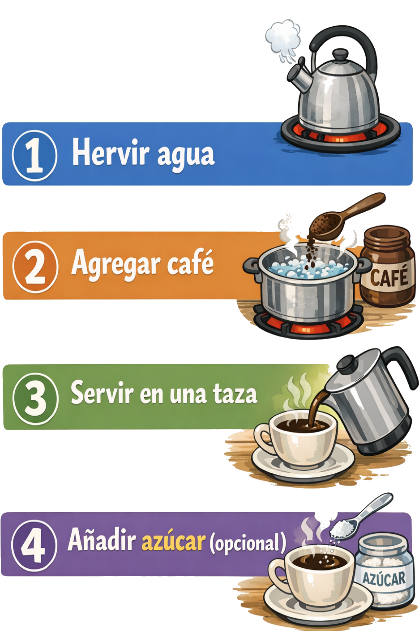
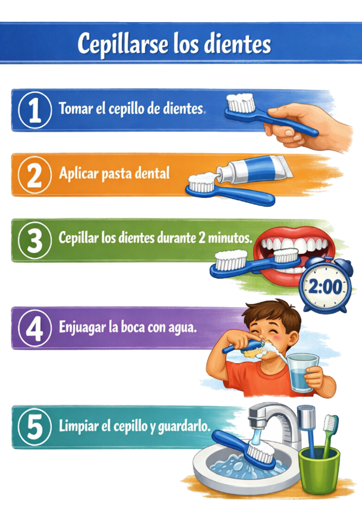

Un algoritmo es una serie de pasos ordenados para resolver problemas, un conjunto finito y ordenado de instrucciones que permiten resolver un problema o realizar una tarea especifica. Estas instrucciones deben precisar, definidas y ejecutables en un tiempo determinado, lo que garantiza que el proceso produzca un resultado esperado (Cormen et al, 2009).
Desde una perspectiva computacional, los algoritmos constituyen la base de la programación y de la resolución sistemática de problemas. Según Knuth (1997), un algoritmo no solo debe ser correcto, sino también eficiente, considerando el uso de recursos como el tiempo y la memoria. Esta visión ha sido fundamental en el desarrollo de la informática moderna, donde la optimización de procesos es un factor clave.
Además, los algoritmos no son exclusivos del ámbito informático; se utilizan en la vida cotidiana en actividades como seguir una receta, resolver una operación matemática o tomar decisiones paso a paso. En este sentido, un algoritmo puede entenderse como una secuencia lógica de acciones orientadas a un objetivo (Aho, Hopcroft & Ullman, 1983).
En el contexto educativo y tecnológico actual, comprender los algoritmos es esencial para desarrollar habilidades de pensamiento lógico y computacional. Tal como señalan (Wing, 2006), el pensamiento computacional implica formular problemas de manera que sus soluciones puedan ser representadas como algoritmos, lo cual es una competencia clave en el siglo XXI (Knuth, D. E. (1997). The Art of Computer Programming. Addison-Wesley; Wing, J. M. (2006). Computational thinking. Communications of the ACM, 49(3), 33–35).
Ejemplo cotidiano, imagina que quieres hacer un café, los pasos para realizar los algoritmos son los siguientes:

Ahora imagina que deseas preparar una taza de café, y sabes que para prepararla debes seguir algunos pasos los cuales son: hervir el agua, agregar café al agua caliente, luego servir en una taza, agregar azúcar (opcional), tal como se ilustra en la imagen anterior.
Ahora imagina que quieres hacer un sándwich. Los pasos que vas a seguir son el algoritmo que debes seguir para realizar una tarea, los cuales son: tomar dos rebanadas de pan, untar mantequilla o mayonesa, colocar jamón y queso sobre una rebanada, añadir lechuga y tomate (opcional), cubrir con la otra rebanada de pan, por último, cortar y servir.
Estos pasos nos ayudan a entender como funcionan los algoritmos, los cuales son un paso a paso para resolver un problema. A continuación, vamos a realizar otros dos ejemplos de cómo realizar los pasos de los algoritmos.
Ahora imagina que te vas a cepillas los dientes, y para esto es necesario también seguir algunos pasos, los cuales son los esenciales para cumplir el objetivo del paso a paso: Algoritmo: Cepillarse los dientes:
1. Debes tomar el cepillo de dientes.
2. Aplicar la pasta dental al cepillo.
3. Cepillar los dientes durante 2 minutos.
4. Enjuagar la boca con agua.
5. Limpiar el cepillo de dientes y luego guardarlo.
Estos pasos permiten ver el algoritmo de cepillarse los dientes, los pasos nos permiten entender el algoritmo.

A continuación, vamos a realizar un último algoritmo donde vamos a seguir los pasos que se deben seguir para encender un computador desde cero paso a paso, los cuales son los siguientes: verificar que esté conectado a la corriente, presione el botón de encendido, esperar a que el sistema inicie, ingresar el usuario y contraseña (opcional), acceder al escritorio. Estos son los pasos precisos para encender un computador. Algoritmo, encender un computador:
1) Verificar que este conectado a la corriente.
2) Presionar el botón de encendido.
3) Esperar a que el sistema inicie.
4) Ingresar usuario y contraseña.
5) Acceder al escritorio.
Estos pasos permiten ver el algoritmo de encender un computador, los pasos nos permiten entender el algoritmo.